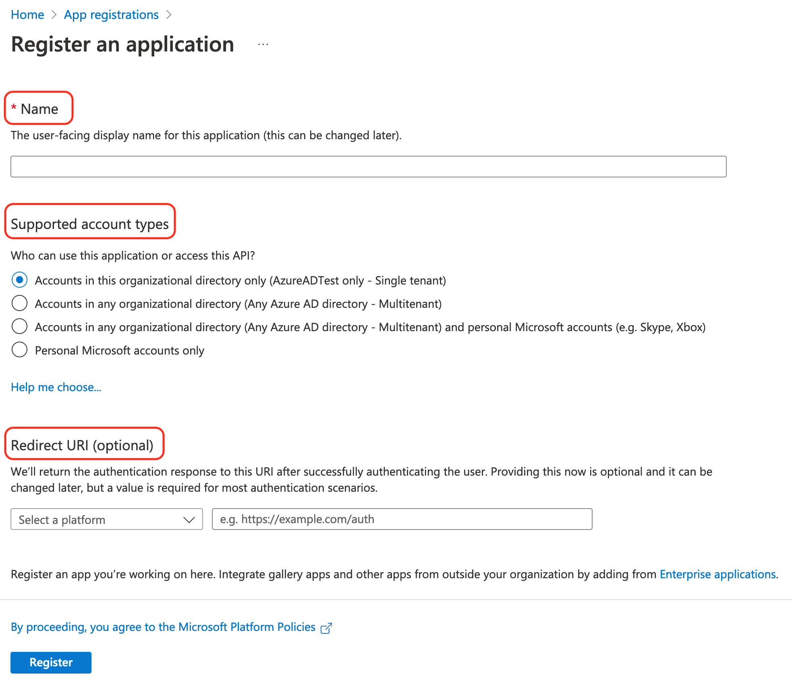
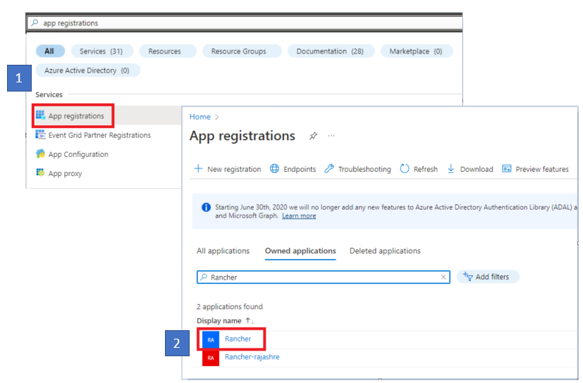
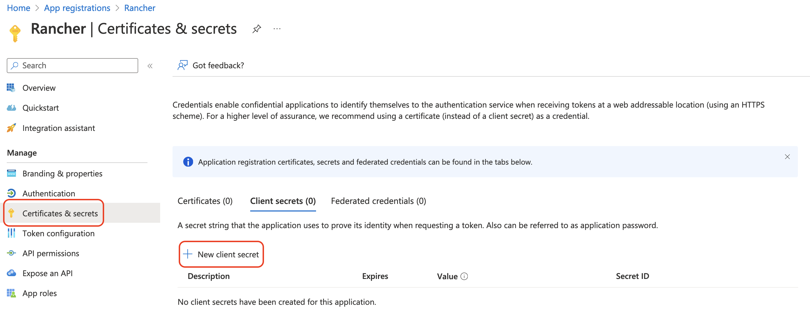
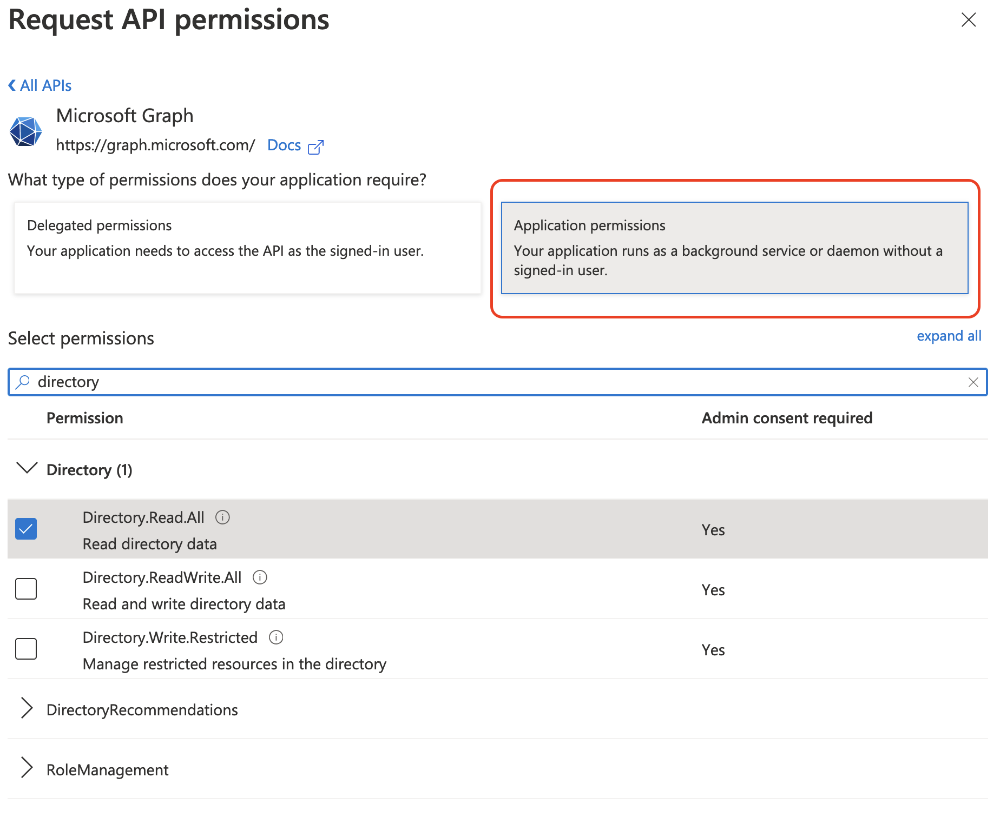
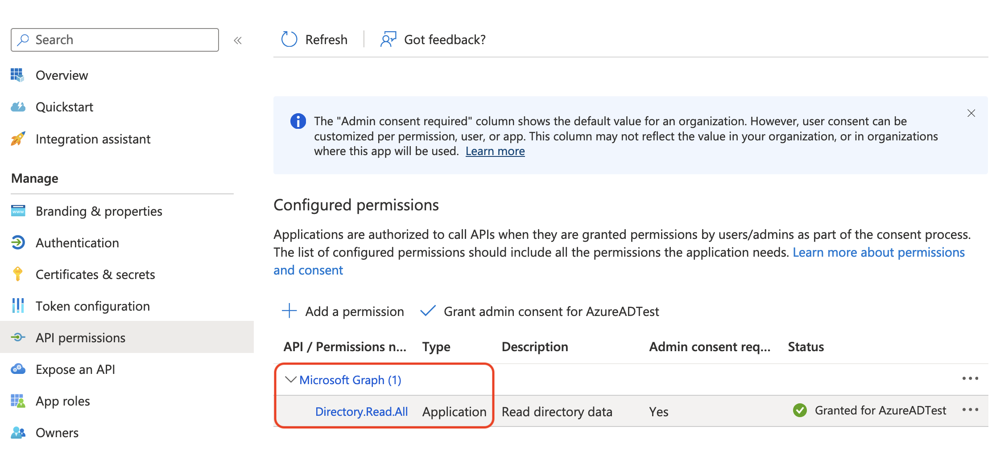
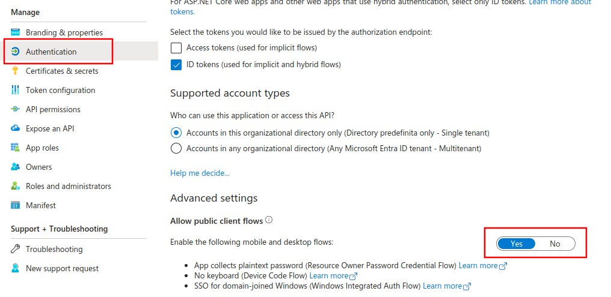
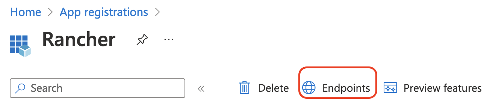
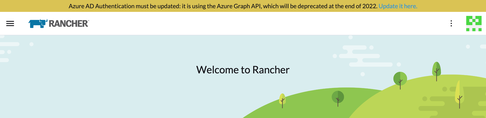
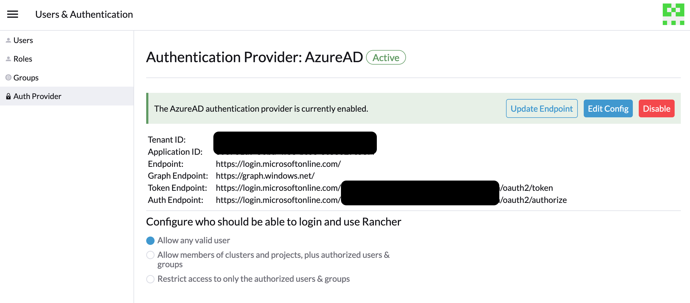
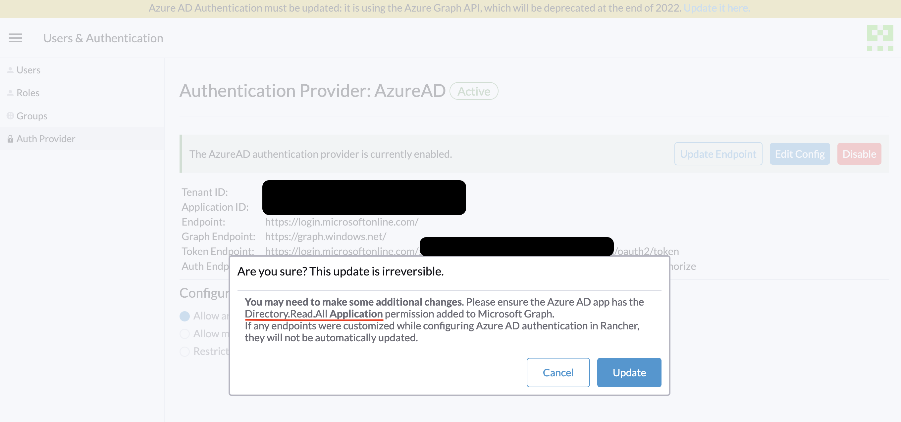

Configure Azure AD
Microsoft Graph API
Microsoft Graph API is now the flow through which you will set up Azure AD. The below sections will assist new users in configuring Azure AD with a new instance as well as assist existing Azure app owners in migrating to the new flow.
The Microsoft Graph API flow in Rancher is constantly evolving. We recommend that you use the latest patched version of 2.7, as it is still in active development and will continue to receive new features and improvements.
New User Setup
If you have an instance of Active Directory (AD) hosted in Azure, you can configure Rancher to allow your users to log in using their AD accounts. Configuration of Azure AD external authentication requires you to make configurations in both Azure and Rancher.
|
Notes
|
Azure Active Directory Configuration Outline
Configuring Rancher to allow your users to authenticate with their Azure AD accounts involves multiple procedures. Review the outline below before getting started.
|
Before you start, open two browser tabs: one for Rancher, and one for the Azure portal. This will help with copying and pasting configuration values from the portal to Rancher. |
1. Register Rancher with Azure
Before enabling Azure AD within Rancher, you must register Rancher with Azure.
-
Log in to Microsoft Azure as an administrative user. Configuration in future steps requires administrative access rights.
-
Use search to open the App registrations service.
-
Click New registration and complete the form.
-
Enter a Name (something like
Rancher). -
From Supported account types, select "Accounts in this organizational directory only (AzureADTest only - Single tenant)" This corresponds to the legacy app registration options.
In the updated Azure portal, Redirect URIs are synonymous with Reply URLs. In order to use Azure AD with Rancher, you must whitelist Rancher with Azure (previously done through Reply URLs). Therefore, you must ensure to fill in the Redirect URI with your Rancher server URL, to include the verification path as listed below.
-
In the Redirect URI section, make sure Web is selected from the dropdown and enter the URL of your Rancher Server in the text box next to the dropdown. This Rancher server URL should be appended with the verification path:
<MY_RANCHER_URL>/verify-auth-azure.You can find your personalized Azure Redirect URI (reply URL) in Rancher on the Azure AD Authentication page (Global View > Authentication > Web).
-
Click Register.
-
|
It can take up to five minutes for this change to take affect, so don’t be alarmed if you can’t authenticate immediately after Azure AD configuration. |
2. Create a new client secret
From the Azure portal, create a client secret. Rancher will use this key to authenticate with Azure AD.
-
Use search to open App registrations services. Then open the entry for Rancher that you created in the last procedure.
 -
From the navigation pane, click Certificates & secrets.
-
Click New client secret.
 -
Enter a Description (something like
Rancher). -
Select the duration from the options under Expires. This drop-down menu sets the expiration date for the key. Shorter durations are more secure, but require you to create a new key more frequently. Note that users won’t be able to log in to Rancher if it detects that the application secret has expired. To avoid this problem, rotate the secret in Azure and update it in Rancher before it expires.
-
Click Add (you don’t need to enter a value—it will automatically populate after you save).
-
You’ll enter this key into the Rancher UI later as your Application Secret. Since you won’t be able to access the key value again within the Azure UI, keep this window open for the rest of the setup process.
3. Set Required Permissions for Rancher
Next, set API permissions for Rancher within Azure.
|
Ensure that you set Application permissions, and not Delegated permissions. Otherwise, you won’t be able to login to Azure AD. |
-
From the navigation pane on, select API permissions.
-
Click Add a permission.
-
From the Microsoft Graph API, select the following Application Permissions:
Directory.Read.All -
Return to API permissions in the nav bar. From there, click Grant admin consent. Then click Yes. The app’s permissions should look like the following:

|
Rancher doesn’t validate the permissions you grant to the app in Azure. You’re free to try any permissions you want, as long as they allow Rancher to work with AD users and groups. Specifically, Rancher needs permissions that allow the following actions:
Rancher performs these actions either to log in a user or to run a user/group search. Keep in mind that the permissions must be of type Here are a few examples of permission combinations that satisfy Rancher’s needs:
|
4. Allow Public Client Flows
To login from Rancher CLI you must allow public client flows:
-
From the left navigation menu, select Authentication.
-
Under Advanced Settings, select Yes on the toggle next to Allow public client flows.

5. Copy Azure Application Data
-
Obtain your Rancher Tenant ID.
-
Use search to open App registrations.
-
Find the entry you created for Rancher.
-
Copy the Directory ID and paste it into Rancher as your Tenant ID.
-
-
Obtain your Rancher Application (Client) ID.
-
If you aren’t already there, use search to open App registrations.
-
In Overview, find the entry you created for Rancher.
-
Copy the Application (Client) ID and paste it into Rancher as your Application ID.
-
-
In most cases, your endpoint options will either be Standard or China. For either of these options, you only need to enter the Tenant ID, Application ID, and Application Secret.
For Custom Endpoints:
|
Custom Endpoints are not tested or fully supported by Rancher. |
You’ll also need to manually enter the Graph, Token, and Auth Endpoints.
-
From App registrations, click Endpoints:
 -
The following endpoints will be your Rancher endpoint values. Make sure to use the v1 version of these endpoints:
-
Microsoft Graph API endpoint (Graph Endpoint)
-
OAuth 2.0 token endpoint (v1) (Token Endpoint)
-
OAuth 2.0 authorization endpoint (v1) (Auth Endpoint)
-
6. Configure Azure AD in Rancher
To complete configuration, enter information about your AD instance in the Rancher UI.
-
Log into Rancher.
-
In the top left corner, click ☰ > Users & Authentication.
-
In the left navigation menu, click Auth Provider.
-
Click AzureAD.
-
Complete the Configure Azure AD Account form using the information you copied while completing Copy Azure Application Data.
The Azure AD account will be granted administrator privileges, since its details will be mapped to the Rancher local principal account. Make sure that this level of privilege is appropriate before you continue.
For Standard or China Endpoints:
The following table maps the values you copied in the Azure portal to the fields in Rancher:
Rancher Field Azure Value Tenant ID
Directory ID
Application ID
Application ID
Application Secret
Key Value
Endpoint
https://login.microsoftonline.com/
For Custom Endpoints:
The following table maps your custom config values to Rancher fields:
Rancher Field Azure Value Graph Endpoint
Microsoft Graph API Endpoint
Token Endpoint
OAuth 2.0 Token Endpoint
Auth Endpoint
OAuth 2.0 Authorization Endpoint
When entering the Graph Endpoint in a custom config, remove the tenant ID from the URL: https://graph.microsoft.com/abb5adde-bee8-4821-8b03-e63efdc7701c -
Click Enable.
Result: Azure Active Directory authentication is configured.
(Optional) Configure Authentication with Multiple Rancher Domains
If you have multiple Rancher domains, it’s not possible to configure multiple redirect URIs through the Rancher UI. The Azure AD configuration file, azuread, only allows one redirect URI by default. You must manually edit azuread to set the redirect URI as needed for any other domains. If you don’t manually edit azuread, then upon a successful login attempt to any domain, Rancher automatically redirects the user to the Redirect URI value you set when you registered the app in Step 1. Register Rancher with Azure.
Migrating from Azure AD Graph API to Microsoft Graph API
Since the Azure AD Graph API is deprecated and slated to retire in June 2023, admins should update their Azure AD App to use the Microsoft Graph API in Rancher. This needs to be done well in advance of the endpoint being retired. If Rancher is still configured to use the Azure AD Graph API when it is retired, users may not be able to log into Rancher using Azure AD.
Updating Endpoints in the Rancher UI
|
Admins should create a Rancher backup before they commit to the endpoint migration described below. |
-
Update the permissions of your Azure AD app registration. This is critical.
-
Log into Rancher.
-
In the Rancher UI homepage, make note of the banner at the top of screen that advises users to update their Azure AD authentication. Click on the link provided to do so.
 -
To complete the move to the new Microsoft Graph API, click Update Endpoint.
Ensure that your Azure app has a new set of permissions before starting the update.  -
When you receive the pop-up warning message, click Update.
 -
Refer to the tables below for the full list of endpoint changes that Rancher performs. Admins do not need to do this manually.
Air-Gapped Environments
In air-gapped environments, admins should ensure that their endpoints are whitelisted (see note on Step 3.2 of Register Rancher with Azure) since the Graph Endpoint URL is changing.
Rolling Back the Migration
If you need to roll back your migration, please note the following:
-
Admins are encouraged to use the proper restore process if they want to go back. Please see backup docs, restore docs, and examples for reference.
-
Azure app owners who want to rotate the Application Secret will need to also rotate it in Rancher as Rancher does not automatically update the Application Secret when it is changed in Azure. In Rancher, note that it is stored in a Kubernetes secret called
azureadconfig-applicationsecretwhich is in thecattle-global-datanamespace.
|
If you upgrade to Rancher v2.7.0+ with an existing Azure AD setup, and choose to disable the auth provider, you won’t be able to restore the previous setup. You also won’t be able to set up Azure AD using the old flow. You’ll need to re-register with the new auth flow. Since Rancher now uses the Graph API, users need set up the proper permissions in the Azure portal. |
Global:
| Rancher Field | Deprecated Endpoints |
|---|---|
Auth Endpoint |
https://login.microsoftonline.com/{tenantID}/oauth2/authorize |
Endpoint |
https://login.microsoftonline.com/ |
Graph Endpoint |
https://graph.windows.net/ |
Token Endpoint |
https://login.microsoftonline.com/{tenantID}/oauth2/token |
| Rancher Field | New Endpoints |
|---|---|
Auth Endpoint |
https://login.microsoftonline.com/{tenantID}/oauth2/v2.0/authorize |
Endpoint |
https://login.microsoftonline.com/ |
Graph Endpoint |
https://graph.microsoft.com |
Token Endpoint |
https://login.microsoftonline.com/{tenantID}/oauth2/v2.0/token |
China:
| Rancher Field | Deprecated Endpoints |
|---|---|
Auth Endpoint |
https://login.chinacloudapi.cn/{tenantID}/oauth2/authorize |
Endpoint |
https://login.chinacloudapi.cn/ |
Graph Endpoint |
https://graph.chinacloudapi.cn/ |
Token Endpoint |
https://login.chinacloudapi.cn/{tenantID}/oauth2/token |
| Rancher Field | New Endpoints |
|---|---|
Auth Endpoint |
https://login.partner.microsoftonline.cn/{tenantID}/oauth2/v2.0/authorize |
Endpoint |
https://login.partner.microsoftonline.cn/ |
Graph Endpoint |
https://microsoftgraph.chinacloudapi.cn |
Token Endpoint |
https://login.partner.microsoftonline.cn/{tenantID}/oauth2/v2.0/token |
Deprecated Azure AD Graph API
|